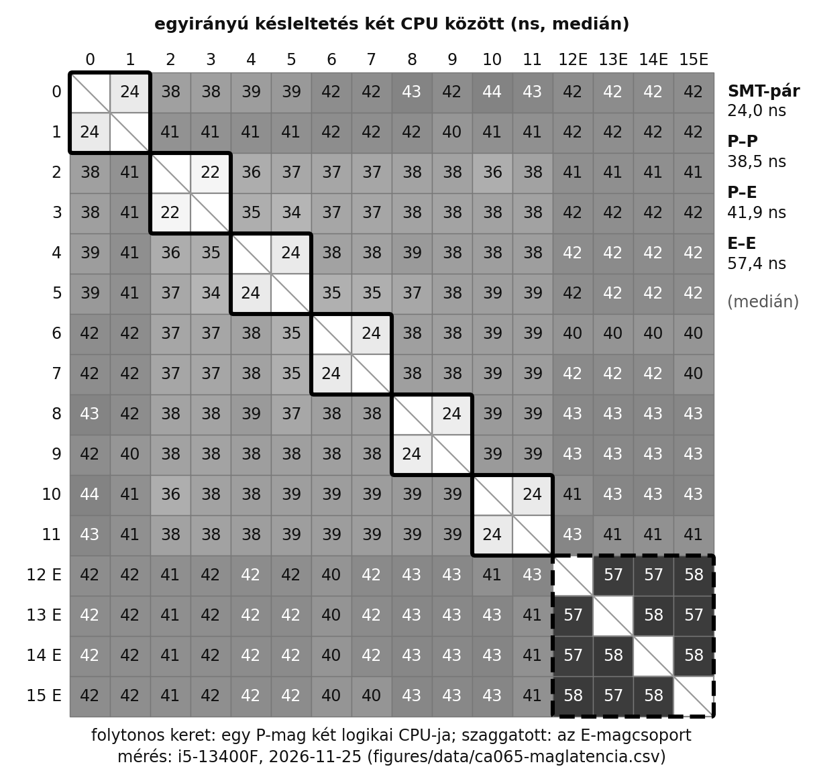
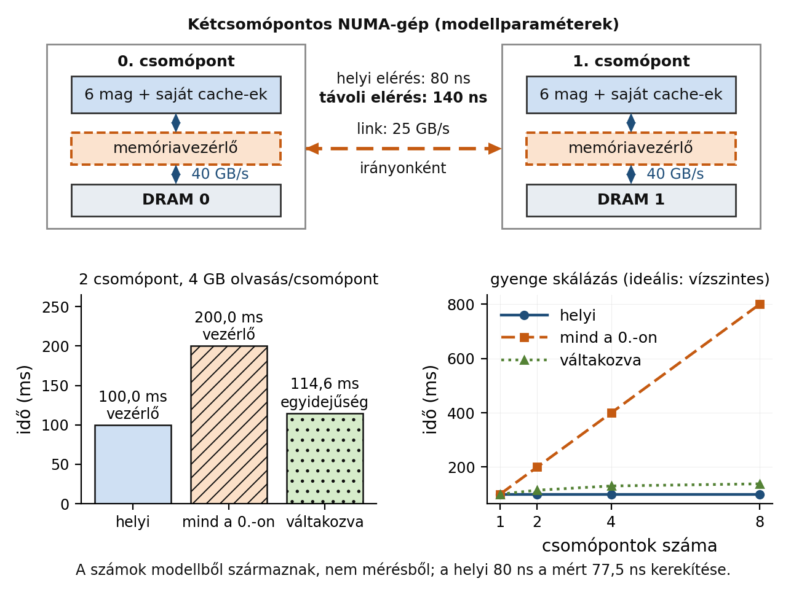

Két szál egyetlen változón keresztül „pingpongozik”: az egyik beírja, hogy ő jön, a másik várja, majd visszaír. Ugyanez a program mást mér aszerint, hogy a két szál melyik logikai processzoron fut. A labor gépén (i5-13400F, mérés: 2026-11-25) az egyirányú átadás mediánja 24,0 ns, ha a két szál egy fizikai mag két SMT-szála, 38,5 ns két külön teljesítménymagon, 41,9 ns egy teljesítmény- és egy hatékony mag között, és 57,4 ns két hatékony mag között. A különbséget az adja, milyen úton jut el a cache-sor az egyik magtól a másikig.

Figyeld meg az átló menti hat kis keretet: ott a két logikai processzor (lásd Hardveres többszálúság és SMT) közös L1 és L2 cache-t használ. A jobb alsó sötét blokk a négy hatékony mag. Hogy az E–E átadás miért lassabb a P–E átadásnál, ebből a mérésből nem dönthető el; nyitott kérdés.
Kétfoglalatos szerveren ez nagyban ismétlődik: a másik processzorhoz kötött memória lassabb és szűkebb. Ugyanaz a ciklus fele olyan gyors lehet csak azért, mert a tömböt rossz szál „érintette meg” először. Ezt előre ki lehet számolni.
Az összeköttetési hálózat (interconnect) köti össze a magokat, cache-szeleteket, memóriavezérlőket és foglalatokat. Négy alapformája:
Az ábrán ugyanaz a 16 csomópont látható háromféleképpen; a számok azt mutatják, hány linken kell áthaladni a sárga csomópontból.
Az alsó diagramokon látszik: a gyűrűben a méret növelésével nőnek az utak, a „keresztbe” folyó forgalomnak mégis mindig csak két link jut.
Definíció. A csomópont (node) a hálózat végpontja, a link két csomópont közvetlen összeköttetése, az ugrás (hop) egy link bejárása.
Definíció. Az átmérő (diameter) a legrövidebb utak közül a leghosszabb, ugrásban. Az átlagos ugrásszám a legrövidebb út hosszának átlaga az összes különböző csomópontpáron.
Definíció. A kettévágási szélesség (bisection width) azoknak a linkeknek a minimális száma, amelyek átvágása a hálózatot két egyenlő (páratlan -nél közel egyenlő) félre bontja. A kettévágási sávszélesség az ezeken átfér adatmennyiség egy másodperc alatt.
Az átmérő a legrosszabb esetet, a tipikus késleltetést, az egyik félből a másikba egyszerre „átkelő” adatot jellemzi; a költséget a linkek és a portok száma adja.
| Topológia | Linkek | Port/csomópont | Átmérő | ||
|---|---|---|---|---|---|
| busz | 1 közös | 1 | 1 | 1 | 1 |
| gyűrű ( páros) | 2 | 2 | |||
| háló (, páros) | 4 | ||||
| keresztkapcsoló | portlink, kapcsolópont | 1 | 1 | 1 |
A háló a négyzetgyök-törvény szerint öregszik: csomópontnál az utak hossza és a is -nel nő. Busznál és keresztkapcsolónál az ugrás definíció szerint 1, mert a közös elem nem köztes csomópont.
A gyűrű átlaga. Páros -nél egy kiinduló csomópontból az 1, 2, …, távolság kétszer fordul elő (jobbra és balra), az egyszer:
Tehát nagy -re az átlagos út körülbelül ugrás: a gyűrű átlagos késleltetése a magok számával arányosan nő.
Mennyi forgalmat bír? Küldjön minden csomópont B/s adatot egyenletesen véletlen címzetteknek, és legyen egy link mindkét irányban sávszélességű (teljes duplex). Az üzenetek körülbelül fele a másik félbe tart, tehát a vágáson halad át, a vágás kapacitása pedig . Ebből
azaz a csomópontonkénti átbocsátás a kettévágási szélességgel arányos és a csomópontszámmal fordítottan. Emellett egy csomópont sem küldhet többet a saját linkjeinél (portszám ). A busznál nincs vágás-trükk: minden üzenet ugyanazon a vezetéken megy, így . Ez felső korlát; az egyenetlen útválasztás és a torlódás tovább ront.
Késleltetés. Terheletlen hálózatban egy bájtos üzenet ideje
ahol az ugrások száma, egy router késleltetése, a második tag pedig a „soros átvitel” ideje. Terhelt hálózatban sorban állás is hozzáadódik; hasonlót a labor gépén a memóriarendszerben látunk (a Memóriavezérlő, sávszélesség és mérés alfejezet mérése): egy mutatókövető lánc egy elérése terheletlenül 69,4 ns, tizenegy terhelő szál mellett, 44,3 GB/s forgalomnál már 245,7 ns.
A Directory-alapú koherencia és skálázódás szerint egy módosított sor megszerzése tipikusan háromugrásos tranzakció: a kérő a sor otthoni (home) csomópontjához fordul, az továbbítja a kérést a tulajdonosnak, a tulajdonos pedig közvetlenül a kérőnek küldi az adatot. Ha a három csomópont egymástól véletlen, átlagosan ugrás és három üzenet ideje telik el.
Ugyanezt fizeti minden sormozgatás: a ping-pong (A koherencia ára: ping-pong és false sharing), az atomi olvas–módosít–ír művelet (Atomi műveletek a hardverben) és a zár átadása (Zárak és tranzakciós memória). Ha egy zár átadása a mért 38,5 ns-os sorátadásnál nem lehet gyorsabb, akkor egyetlen, folyamatosan vándorló sor felett másodpercenként legfeljebb körülbelül millió átadás történhet, akárhány magot adunk is hozzá. Távoli magok (másik foglalat) között ugyanaz a zár még drágább.
Definíció. A NUMA (non-uniform memory access, nem egyenletes memóriaelérés) gépben a memória csomópontokra oszlik: minden NUMA-csomópont saját memóriavezérlővel és magokkal rendelkezik. A helyi (local) elérés a saját csomópont memóriájába megy, a távoli (remote) egy csomópontok közötti linken keresztül.
Linuxon a numactl --hardware mutatja a felosztást; a
labor egyfoglalatos gépén (a szabad memória pillanatnyi):
numactl --hardwareavailable: 1 nodes (0)
node 0 cpus: 0 1 2 3 4 5 6 7 8 9 10 11 12 13 14 15
node 0 size: 64108 MB
node 0 free: 37632 MB
node distances:
node 0
0: 10 A node distances mátrixban a helyi távolság
hagyományosan 10; a nagyobb szám viszonylagos késleltetést jelez, nem
mért nanoszekundumot. Firmware-beállítással egy foglalat is több
NUMA-csomópontnak látszhat (ellenőrizendő: modellfüggő).
Mivel a laborban nincs NUMA-gép, modellt használunk: a következő számok nem mérések. A paraméterek:
| Jelölés | Jelentés | Modellérték |
|---|---|---|
| helyi elérés késleltetése | 80 ns (a mért 77,5 ns kerekítése) | |
| távoli elérés késleltetése | 140 ns (feltételezés) | |
| egy csomópont memória-sávszélessége | 40 GB/s (mért nagyságrend) | |
| link sávszélessége irányonként | 25 GB/s (feltételezés) | |
| , | szál/csomópont, függő sorkérés/szál | 6 és 10 |
A mérések a Memóriavezérlő, sávszélesség és mérés adatsoraiból valók: 256 MiB-os véletlen láncon 77,5 ns, hat olvasó szállal 46,7 GB/s. Ha a hozzáférések hányada távoli, az átlagos késleltetés
vagyis a két késleltetés súlyozott átlaga. A sávszélesség három helyen fogyhat el: a memóriavezérlőn, a linken, és a magoknál, mert azok egyszerre csak véges sok sort várhatnak. Ez utóbbi a Nem blokkoló cache, memóriaszintű párhuzamosság és prefetch alfejezet MLP-je és a Little-törvény: ha egy csomóponton sorkérés van úton, mindegyik 64 bájt, akkor legfeljebb bájt érkezik másodpercenként. Ha minden csomópont bájtot olvas, a futási idő a három korlát maximuma:
A képlet azt mondja: a leglassabb erőforrás uralja az időt, a többi kihasználatlanul vár.
A Linux nem a foglaláskor, hanem az első íráskor rendel fizikai keretet a virtuális laphoz, alapesetben az író szál csomópontján: ez az első érintés (first touch) politika. A laptábla (Lapozás és többszintű laptáblák) ekkor kap bejegyzést, és a lap a helyén marad, amíg át nem költöztetik.
Három fő elhelyezés:
std::vector<double> v(n));numactl --interleave=all).A helyes minta C++-ban, OpenMP-vel:
// rossz: a konstruktor a hívó szálon nullázza (érinti) az egész tömböt
std::vector<double> bad(n);
// jobb: inicializálatlan foglalás, párhuzamos első érintés ...
std::unique_ptr<double[]> a(new double[n]);
#pragma omp parallel for schedule(static)
for (std::size_t i = 0; i < n; ++i) a[i] = 1.0;
// ... és a számolás ugyanazzal a felosztással
double sum = 0.0;
#pragma omp parallel for schedule(static) reduction(+ : sum)
for (std::size_t i = 0; i < n; ++i) sum += a[i];A schedule(static) mindkét ciklusban ugyanazt a
felosztást adja. A szálakat rögzíteni (pinning) is kell
(OMP_PROC_BIND=close, numactl --cpunodebind),
különben az ütemező átviheti őket, és a helyi adat távolivá válik.
A mechanizmus egy csomóponton is megfigyelhető: a következő program a
move_pages rendszerhívással (cél nélkül hívva csak
lekérdez) megkérdezi, melyik csomóponton van egy lap; a
azt jelenti, hogy a lapnak még nincs fizikai kerete.
// first_touch.cpp – melyik NUMA-csomópontra került egy lap? (Linux)
#include <sys/mman.h>
#include <sys/syscall.h>
#include <unistd.h>
#include <cstddef>
#include <cstdio>
#include <thread>
// a lap csomópontja; negatív érték: hibakód (-2: még nincs fizikai lapja)
static int node_of(void* page) {
int status = -1;
if (syscall(SYS_move_pages, 0, 1UL, &page, nullptr, &status, 0) != 0) return -1000;
return status;
}
int main() {
const std::size_t page = sysconf(_SC_PAGESIZE), pages = 4, bytes = pages * page;
const int flags = MAP_PRIVATE | MAP_ANONYMOUS;
void* mem = mmap(nullptr, bytes, PROT_READ | PROT_WRITE, flags, -1, 0);
if (mem == MAP_FAILED) return 1;
char* p = static_cast<char*>(mem);
auto report = [&](const char* when) {
for (std::size_t i = 0; i < pages; ++i) std::printf("%3d", node_of(p + i * page));
std::printf(" %s\n", when);
};
report("lefoglalás után");
p[0] = 1; // a főszál írja a 0. lapot
report("0. lap: a főszál írta");
std::thread worker([&] { p[2 * page] = 1; p[3 * page] = 1; });
worker.join();
report("2-3. lap: a második szál");
munmap(mem, bytes);
}Fordítás és futtatás a labor gépén
(g++ -std=c++20 -O2 -pthread first_touch.cpp):
-2 -2 -2 -2 lefoglalás után
0 -2 -2 -2 0. lap: a főszál írta
0 -2 0 0 2-3. lap: a második szálCsak a megírt lapok kapnak csomópontot; az 1. lap a program végéig „sehol” van. Kétcsomópontos gépen, ha a második szál a másik csomóponthoz van rögzítve, a 2. és 3. lapnál 1-est várunk (ezt itt nem tudtuk ellenőrizni).
A mai nagy processzorok tokjában gyakran több chiplet (kisebb lapka) van, lapkák közötti linkekkel; a foglalatok külön processzorközi linkeken beszélnek (például UPI, Infinity Fabric; ellenőrizendő a konkrét generációra). A modell szempontjából mindegyik újabb szint, saját késleltetéssel és sávszélességgel: minél „messzebb” van a két végpont, annál drágább az átadás.
1. Háló és gyűrű 16 csomóponttal. A -es hálóban a linkek száma , az átmérő (átlós sarkok között), , . A 16-os gyűrűben 16 link van, az átmérő , , .
2. Átbocsátási korlát. Legyen GB/s irányonként. A gyűrűn GB/s, a hálón GB/s. 64 csomópontra a gyűrű már csak 4 GB/s-ot, a -as háló 16 GB/s-ot enged.
3. Háromugrásos tranzakció 16 csomóponton, ns (modellérték): két rövid, 8 bájtos kontrollüzenet ( ns soros idő mindegyik) és egy 64 bájtos adatüzenet ( ns). A gyűrűn ns, a hálón ns. Ez tisztán a hálózati idő: a cache-elérések ideje még hozzáadódik.
4. NUMA, két csomópont, GB csomópontonként.

A jobb oldali görbe a gyenge skálázás (Amdahl és Gustafson törvénye): csomópontonként állandó munkánál ideális esetben az idő sem változik. A helyi elhelyezés ezt tartja; az egy csomópontra tett adatnál az idő a csomópontszámmal arányosan nő, mert egy vezérlő szolgál ki mindenkit.
Az archkit.interconnect modul ugyanezeket a számokat
számolja; a topológiákat szélességi bejárással méri, a kettévágási
szélességet képlettel adja (kis méretre a tesztek minden felezést
végigpróbálnak).
import sys; sys.path.insert(0, "code")
from archkit import interconnect as ic, perf
print(f"{'topológia':12}{'linkek':>7}{'átmérő':>8}{'átl. H':>8}{'B_w':>5}{'λ_max':>11}")
for kind in ("bus", "ring", "mesh", "torus", "crossbar"):
for n in (16, 64):
m = ic.metrics(kind, n)
lam = ic.node_throughput(kind, n, 32e9) / 1e9
print(f"{kind + ' ' + str(n):12}{m['links']:7d}{m['diameter']:8d}{m['avg_hops']:8.2f}"
f"{m['bisection']:5d}{lam:7.1f} GB/s")topológia linkek átmérő átl. H B_w λ_max
bus 16 1 1 1.00 1 2.0 GB/s
bus 64 1 1 1.00 1 0.5 GB/s
ring 16 16 8 4.27 2 16.0 GB/s
ring 64 64 32 16.25 2 4.0 GB/s
mesh 16 24 6 2.67 4 32.0 GB/s
mesh 64 112 14 5.33 8 16.0 GB/s
torus 16 32 4 2.13 8 64.0 GB/s
torus 64 128 8 4.06 16 32.0 GB/s
crossbar 16 16 1 1.00 8 32.0 GB/s
crossbar 64 64 1 1.00 32 32.0 GB/sA tórusz (torus) a szélein is összekötött háló: kétszeres néhány plusz linkért. A keresztkapcsoló korlátja a 32 GB/s-os portlink, ezért nem romlik a mérettel; ára az kapcsolópont.
A NUMA-modell és a három elhelyezés:
meta, rows = perf.read_bench_csv("figures/data/ca051-kesleltetes.csv")
mert = next(r["median_ns_per_access"] for r in rows
if r["core"] == "P" and r["pattern"] == "random" and r["bytes"] == 2**28)
print(f"mért helyi késleltetés (256 MiB, véletlen lánc): {mert:.1f} ns")
print("a mérés dátuma:", meta["date"][:10])
gep = ic.NumaMachine() # a táblázat modellparaméterei
for politika in ("local", "master", "interleave"):
e = gep.run(ic.placement(politika, 2), 4e9)
print(f"{politika:11} idő {e['time'] * 1000:6.1f} ms távoli arány {e['remote']:.2f}"
f" szűk: {e['bound']}")mért helyi késleltetés (256 MiB, véletlen lánc): 77.5 ns
a mérés dátuma: 2026-11-25
local idő 100.0 ms távoli arány 0.00 szűk: memória
master idő 200.0 ms távoli arány 0.50 szűk: memória
interleave idő 114.6 ms távoli arány 0.50 szűk: egyidejűségA „memória” itt a vezérlőt jelenti. Az első érintés modellje nyolc szállal (szálanként 1,25 MiB), kétféle lapmérettel:
MiB = 1 << 20
darabok = ic.static_chunks(10 * MiB, 8)
csomopont = [0, 0, 0, 0, 1, 1, 1, 1]
for lap in (4096, 2 * MiB):
lapok = ic.first_touch(darabok, lap, csomopont) # párhuzamos inicializálás
frac = ic.placement_matrix(lapok, lap, darabok, csomopont, 2)
e = gep.run(frac, 4e9)
print(f"lapméret {lap // 1024:5d} KiB: helyi arány csomópontonként {frac[0][0]:.2f} és "
f"{frac[1][1]:.2f}, idő {e['time'] * 1000:.1f} ms")lapméret 4 KiB: helyi arány csomópontonként 1.00 és 1.00, idő 100.0 ms
lapméret 2048 KiB: helyi arány csomópontonként 0.80 és 1.00, idő 120.0 ms4 KiB-os lapoknál a laphatárok a darabhatárokhoz igazodnak, 2 MiB-osaknál nem: a 4–6 MiB közötti nagy lapot a 4. szál (1. csomópont) érinti meg először, így a 0. csomópont utolsó 1 MiB-ja távoli lesz. A nagy lap (TLB, nagy lapok és a VIPT cache) javítja a címfordítást, de durvítja az elhelyezést.
Továbbvitt eredmény. A topológiát az átmérő, az átlagos ugrásszám, a kettévágási szélesség és a költség jellemzi; egyenletes forgalomnál a csomópontonkénti átbocsátás legfeljebb . A NUMA-gép ideje a memóriavezérlő, a link és a Little-törvény szerinti egyidejűség korlátainak maximuma, az átlagos késleltetés ; az adat helyét az első érintés dönti el. Erre épít a SIMT, warpok és divergencia, az Esettanulmány: mérésvezérelt optimalizálás és a 2–3. záróprojekt: cache-szimulátor és mikrobenchmark-sorozat.
1. Párhuzamos számolás, soros inicializálás.
Tünet: egy foglalaton belül jó a skálázás, a másodikkal alig
gyorsul. Ok: a főszál nullázta a tömböt (konstruktor,
calloc utáni memset), minden lap a 0.
csomópontra került. Javítás: párhuzamos első érintés a
számolásnál használt felosztással.
2. Elmozduló szálak. Tünet: a futási idő
futásról futásra erősen ingadozik. Ok: nincs szálrögzítés, vagy
a schedule(dynamic) minden körben más szálnak adja ugyanazt
az adatot. Javítás: rögzítés (OMP_PROC_BIND,
numactl --cpunodebind) és statikus particionálás.
**3. „A váltakozó elhelyezés mindig jobb.”* Tünet: a helyben jól particionált program interleave-vel lassabb lesz. Ok: a távoli arány -re ( csomópontnál) nő, és a linkek is terhelődnek. Javítás: az interleave akkor hasznos, ha az adatot minden csomópont egyformán olvassa, és nem lehet particionálni.
4. Késleltetés és sávszélesség összemosása. Tünet: „a busz is 1 ugrás, tehát elég jó”. Ok: az ugrásszám nem mond semmit a vágásról. Javítás: mindkettőt és a költséget is nézd.
archkit.interconnect segítségével
add meg
-re
a távoli arányt, az időt és a szűk keresztmetszetet!Az összeköttetési hálózat késleltetése az ugrásszámtól, egyenletes forgalmú átbocsátása a kettévágási szélességtől függ: . A gyűrű olcsó, de átlagos útja -gyel nő; a háló szerint skálázódik; a keresztkapcsoló gyors, de kapcsolópontot igényel; a busz egyetlen közös közeg. A koherenciatranzakciók, atomik és zárak ára a magok közötti úttól függ: a mért egyirányú átadás 24–57 ns. NUMA-gépen az átlagos késleltetés , az idő pedig a memóriavezérlő, a link és az egyidejűség korlátainak maximuma. A lapok helyét az első érintés dönti el: párhuzamos inicializálás, azonos particionálás, rögzített szálak. A modell csak becslés: kétfoglalatos gépen a paramétereit mérésből kell venni.
Háló: link, átmérő , , . Gyűrű: 64 link, átmérő 32, , . A háló 75%-kal több linkért körülbelül harmadannyi átlagos utat és négyszeres vágást ad.
ns; ns. A 20%-os távoli arány 15%-os, a 75%-os 56%-os késleltetésnövekedés.
A helyi elhelyezés nem használ linket: 100 ms (vezérlő). Egy csomópontra: a linken 4 GB megy 10 GB/s-mal, 400 ms, nagyobb, mint a vezérlő 200 ms-a, tehát link. Váltakozó: linkirányonként 2 GB, 200 ms, ami már nagyobb a 114,6 ms-os egyidejűségi korlátnál: link. Szűk link mellett az interleave kétszer lassabb a helyinél.
szuk = ic.NumaMachine(link_bw=10e9)
for politika in ("local", "master", "interleave"):
e = szuk.run(ic.placement(politika, 2), 4e9)
print(f"{politika:11} {e['time'] * 1000:6.1f} ms {e['bound']}")local 100.0 ms memória
master 400.0 ms link
interleave 200.0 ms linkA kód-táblázat szerint a tórusz: 128 link, átmérő 8, ; a háló: 112 link, átmérő 14, . A kétszeres vágás , azaz 14%-kal több linkért adódik. Ár: a szélek közti linkek fizikailag hosszabbak, ami a modellünkben nem látszik.
Gyűrű, 64 csomópont: ns. Háló, 16 csomópont: 10,5 ns. Az arány : ugyanaz a zár majdnem ötször drágább, pedig a programon semmi sem változott.
darabok = ic.static_chunks(8 * MiB, 8)
lapok = ic.first_touch(darabok, 4096, csomopont)
for k in range(8):
szamol = [darabok[(t + k) % 8] for t in range(8)]
frac = ic.placement_matrix(lapok, 4096, szamol, csomopont, 2)
e = gep.run(frac, 4e9)
print(f"k={k}: távoli {e['remote']:.2f}, idő {e['time'] * 1000:6.1f} ms, {e['bound']}")k=0: távoli 0.00, idő 100.0 ms, memória
k=1: távoli 0.25, idő 100.0 ms, memória
k=2: távoli 0.50, idő 114.6 ms, egyidejűség
k=3: távoli 0.75, idő 130.2 ms, egyidejűség
k=4: távoli 1.00, idő 160.0 ms, link
k=5: távoli 0.75, idő 130.2 ms, egyidejűség
k=6: távoli 0.50, idő 114.6 ms, egyidejűség
k=7: távoli 0.25, idő 100.0 ms, memóriaa legrosszabb: minden szál a másik csomópont adatát olvassa. Kis eltolásnál a vezérlőkorlát még elfedi a hatást – a jó idő nem bizonyítja a jó elhelyezést.